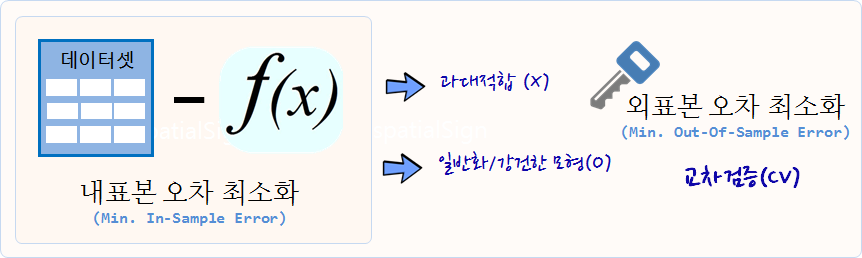

xwMOOC 기계학습
기계학습 예측모형 기초
학습목표
1. 전통적 통계모형과 예측모형 비교
예측모형(Predictive Model)은 정확도가 높은 모형을 개발하는 과정이다. 따라서, 전통적 통계학에서 강조하는 추론, 타당성, 유의성, 가정과 같은 개념적인 것보다는 “실질적으로 정확하게 예측을 할 수 있는가?” 라는 문제늘 더 중요하게 다루고 있다.
예측모형에서 중요하게 고려되는 사항
- 예측모형 성능
- 예측의 단순성
- 복잡성과 컴퓨팅 비용을 줄이도록 변수(특성, Feature) 축소
- 예측수식 평활(smoothness)
- 예측모형의 강건성

2. 찾으려는 예측모형 특성
오랜기간 좋은 예측모형을 찾으려고 백방으로 수소문하여 현재까지 가장 좋은 예측모형은 지금까지 보지 않던 표본 데이터에 가장 좋은 성능을 보여주는 예측모형이 답이다.
주어진 데이터에서 다양한 예측모형을 개발하지만, 결국 예측모형이 처음으로 접하는 데이터에도 좋은 성능을 내는, 즉 외표본 오차를 최소화하는 예측모형이 찾고자하는 모형이다.
이를 위해서 과대적합(Overfitting)하지 말하야 되고, 일반적/강건한 모형이 되어야 한다. 교차검증(Cross-Validation, CV) 방법이 이 문제에 대한 열쇠를 쥐고 있다.

3. caret 팩키지
caret 팩키지와 같은 예측모형 전용 팩키지가 필요한 이유는 너무나 많은 예측모형이 존재하고, 더 큰 문제는 사용법과 해석이 모두 다르다는데 있다. 너무 많은 사람이들이 오랜기간에 걸쳐 개발하다보니 어쩌면 당연한 문제라고 볼 수도 있다.
2.1. R 팩키지 구문
기계학습에서 가장 많이 작업하는 것 중에 하나가 분류문제에 대한 예측 알고리즘을 제시하는 것이다. 데이터도 다양하지만, 분류문제에 대한 다양한 이론이 존재하고, R로 구현된 팩키지도 정말 다양한다. 예를 들어, lda는 판별분석(Linear Discrimant Analsyis)을 돌릴 때 사용되는 것으로 MASS 팩키지에 포함되어 있고, 훈련데이터 혹은 검증데이터에 예측값을 구할 경우 predict 함수에 lda 반환값을 넣어주면 되고 추가설정은 필요없다. glm은 일반화 선형모형을 적합할 때 특히 링크함수로 logit을 넣어 설정하고 stats 팩키지에 포함되어 있고, 구문은 lda와 확연한 차이를 볼 수 있다.
gbm, mda, rpart, Weka, LogitBoost등 다양한 예측 알고리즘이 존재한다. 다음은 Max Kuhn 박사가 caret을 개발한 주요한 사유로 정리한 표다. 이를 일관된 인터페이스로 제공하고 나아가 각 모형의 성능을 객관적으로 비교할 수 있는 성능평가 지표 도출 및 확정을 위해서 꼭 필요한 것으로 판단된다. (본인이 필요해서 개발하지 않았을까 생각되고, 누구나 이런 코드는 갖고 있는데 체계적으로 정리해서 공개한 후, 10년에 걸쳐 시간을 투여한 Kuhn 박사님께 감사드립니다.)
| 예측함수명 | 팩키지명 | predict 함수 예측구문 |
|---|---|---|
| lda | MASS | predict(obj) (추가 인자설정 불필요) |
| glm | stats | predict(obj, type = “response”) |
| gbm | gbm | predict(obj, type = “response”, n.trees) |
| mda | mda | predict(obj, type = “posterior”) |
| rpart | rpart | predict(obj, type = “prob”) |
| Weka | RWeka | predict(obj, type = “probability”) |
| LogitBoost | caTools | predict(obj, type = “raw”, nIter) |
caret에서 지원하는 예측모형 목록 중 일부는 다음과 같고, 전체 목록은 예측모형 caret 목록을 참조한다. 2014년 2월 기준 예측모형과 예측함수 147개, 2016년 1월 기준 216개 폭증.
| 모형 | 예측함수명 | 팩키지 | 세부조정 모수 |
|---|---|---|---|
| 재귀적 분할 | rpart | rpart | maxdepth |
| Boosted trees | gbm | gbm | interaction.depth, n.trees, shrinkage |
| Random forests | rf | randomForest | mtry |
| 신경망 | nnet | nnet | decay, size |
| Support Vector Machine (RBF 커널) | svmRadial | kernlab | sigma, C |
| Support Vector Machine (다항식 커널) | svmPoly | kernlab | scale, degree, C |
| 선형회귀 | lm | stats | 없음 |
| … | … | … | … |